scRNA-seq: COVID-19 PBMCs
Pedro Milanez-Almeida
2026-05-06
Source:vignettes/clinical-scRNAseq-analysis.Rmd
clinical-scRNAseq-analysis.RmdIntroduction
This vignette demonstrates how tinydenseR can be applied
to a real-world clinical scRNA-seq dataset to identify dysregulated cell
states in COVID-19 patients. We use PBMC data from the COMBAT (COvid-19
Multi-omics Blood ATlas) consortium to show how differential density
analysis combined with PLS-based decomposition (plsD) reveals:
- A monocyte-centered transcriptional axis separating neutrophil degranulation-related inflammatory features from interferon alpha/gamma response programs in early critical vs. mild disease — captured by plsD component 1 (plsD1).
- A secondary severity-associated axis of hematopoietic stress beyond the dominant monocyte program, with progenitor-like cell-associated genes at one extreme and pDC- and NK cell-associated genes at the other — captured by plsD component 2 (plsD2).
Analysis Overview
The core workflow follows four steps:
-
RunTDR()— build landmarks from an on-disk count matrix and compute sample-level density profiles. - Visualize landmark and sample embeddings — inspect the UMAP of landmarks and the sample PCA to confirm biological structure.
-
get.lm()with contrasts — perform differential density analysis while controlling for covariates (sex, age, time since symptom onset). -
get.plsD()— decompose the density contrast into interpretable components that jointly capture differential abundance and differential expression.
Data Source
The COMBAT dataset is available from CELLxGENE (link). The original study is described in:
COMBAT Consortium. A blood atlas of COVID-19 defines hallmarks of disease severity and specificity. Cell 185, 916–938 (2022).
Setup
Load and Prepare Data
We read the COMBAT .h5ad file, keeping data on disk via
anndataR and BPCells for memory efficiency.
This section shows the key preprocessing steps; adjust file paths to
match your local setup.
# Path to the downloaded h5ad file
file_path <- "~/sandbox/COVID19_COMBAT/derived_data/COMBAT.h5ad"
# Access h5ad keeping data on disk
h5ad <-
anndataR::read_h5ad(
path = file_path,
as = "HDF5AnnData")
# Extract metadata and feature information
feature_metadata <- h5ad$var
metadata <- h5ad$obsQuality Control and Filtering
We apply basic QC thresholds and restrict the analysis to healthy volunteers (HV) and COVID-19 patients with mild, severe, or critical disease. Samples with fewer than 200 cells are excluded.
# Basic QC: minimum 1000 UMI and 500 genes per cell
keep.QC.cells <-
(metadata$QC_total_UMI >= 1000) &
(metadata$QC_ngenes >= 500)
# Keep only HV, MILD, SEV, and CRIT patients with >= 200 cells
smpl.to.keep <-
metadata$scRNASeq_sample_ID[
metadata$Source %in% c("HV", "COVID_MILD", "COVID_SEV", "COVID_CRIT")
] |>
table() |>
(\(x) names(x[x >= 200]))()
metadata <-
metadata[keep.QC.cells & (metadata$scRNASeq_sample_ID %in% smpl.to.keep), ]Prepare the On-Disk Count Matrix
We use BPCells to store the count matrix on disk and
subset it to QC-passing cells with unique gene symbols.
# Remove duplicated gene symbols
keep.unique.genes <- !duplicated(feature_metadata$feature_name)
feature_metadata <- feature_metadata[keep.unique.genes, ] |> droplevels()
# Write BPCells on-disk matrix
ondisk_path <-
"~/sandbox/COVID19_COMBAT/derived_data/COMBAT_COVID_ondisk/"
ondisk.data <-
BPCells::open_matrix_anndata_hdf5(
path = file_path,
group = "/X")
if(!file.exists(path = ondisk_path)){
# write this BPCells matrix to disk
BPCells::write_matrix_dir(
mat = ondisk.data,
dir = ondisk_path)
}
# Re-open and subset
ondisk.mat <-
BPCells::open_matrix_dir(dir = ondisk_path)
ondisk.mat <-
ondisk.mat[keep.unique.genes, keep.QC.cells & (metadata$scRNASeq_sample_ID %in% smpl.to.keep)]
rownames(x = ondisk.mat) <- feature_metadata$feature_namePrepare Metadata Covariates
We encode disease severity as ordered factor levels and binarize time
since symptom onset into “early” and “late” to allow for non-linear
effects. We also create a combined Source_TSO.binary
variable for the contrast design.
metadata <-
metadata |>
dplyr::mutate(
Source = factor(
x = Source,
levels = c("HV", "COVID_MILD", "COVID_SEV", "COVID_CRIT")),
TimeSinceOnset = ifelse(
test = Source != "HV",
yes = TimeSinceOnset,
no = -1)
) |>
droplevels()Step 1: Build Landmarks with RunTDR()
RunTDR() is the main entry point. It creates landmark
cells, builds a neighborhood graph, computes sample-level density
profiles, and maps cell type annotations — all in a single call.
lm.cells <-
tinydenseR::RunTDR(
x = ondisk.mat,
.sample.var = "scRNASeq_sample_ID",
.cell.meta = metadata,
.assay.type = "RNA",
.celltype.vec = "cell_type",
.label.confidence = 0.5,
.verbose = FALSE,
.seed = 123 # for reproducibility
)Step 2: Visualize Landmark and Sample Embeddings
Before statistical testing, we inspect the landmark UMAP and sample PCA to confirm that the data exhibits the expected biological structure.
tinydenseR::plotUMAP(
x = lm.cells,
.feature = lm.cells$landmark.annot$celltyping$ids,
.plot.title = "COMBAT landmarks (cell types)"
) +
ggplot2::guides(color = ggplot2::guide_legend(
override.aes = list(size = 5),
ncol = 2))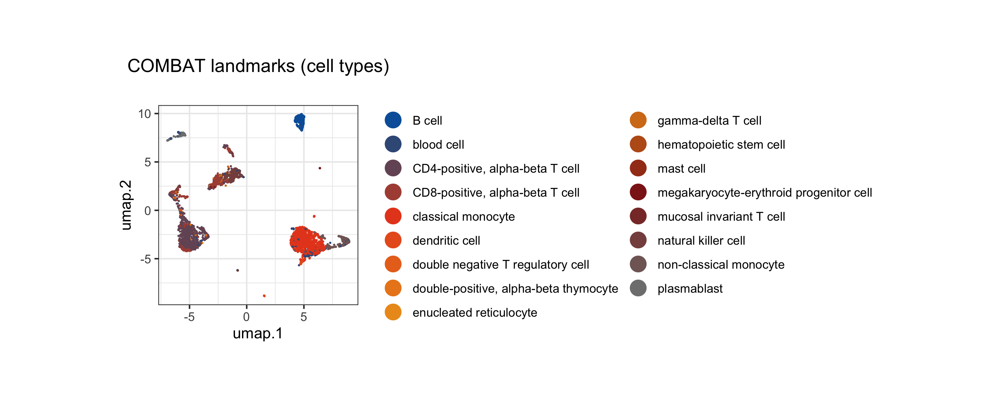
We can also project individual gene expression (e.g., canonical markers) onto the UMAP to validate cell identities:
# Classical monocyte marker
p1 <-
tinydenseR::plotUMAP(
x = lm.cells,
.feature = lm.cells$landmarks[, "LYZ"],
.plot.title = "LYZ (classical monocytes)")
# MHC class II
p2 <-
tinydenseR::plotUMAP(
x = lm.cells,
.feature = lm.cells$landmarks[, "HLA-DRA"],
.plot.title = "HLA-DRA (MHC class II)")
# T cell marker
p3 <-
tinydenseR::plotUMAP(
x = lm.cells,
.feature = lm.cells$landmarks[, "CD3E"],
.plot.title = "CD3E (T cells)")
p1 | p2 | p3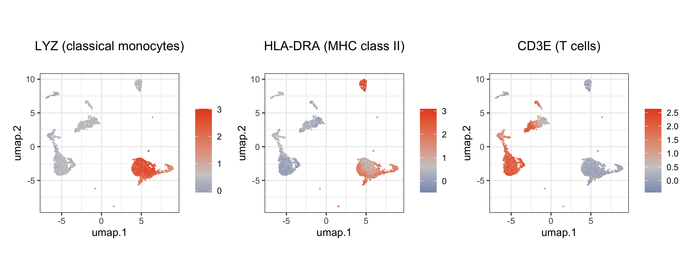
Sample PCA
The sample PCA provides a low-dimensional view of inter-sample variation based on their density profiles across landmarks. The color encodes sample library size (log10 total cells).
tinydenseR::plotSampleEmbedding(
x = lm.cells,
.embedding = "pca",
.color.by = "log10.n.cells"
)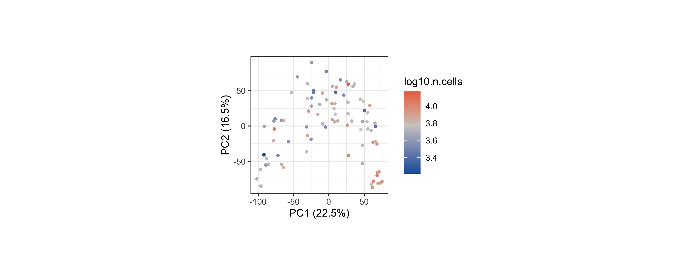
Step 3: Differential Density Analysis with
get.lm()
Encoding Covariates
We binarize time since onset into “early” vs. “late” and create a composite factor that crosses disease severity with timing. This allows us to define biologically meaningful contrasts while controlling for confounders.
# Binarize TimeSinceOnset
lm.cells@metadata <-
dplyr::mutate(
.data = lm.cells@metadata,
TSO.binary =
dplyr::case_when(
Source == "HV" ~ "uninfected",
Source != "HV" ~ ifelse(
TimeSinceOnset > median(TimeSinceOnset[Source != "HV"]),
"late", "early")
) |>
factor(levels = c("uninfected", "early", "late"))
)
# Standardize Age encoding
lm.cells$metadata$Age <-
make.names(lm.cells$metadata$Age) |>
gsub(pattern = "^X", replacement = "Age.", fixed = FALSE)
# Create composite Source x TSO variable
lm.cells$metadata$Source_TSO.binary <-
paste(lm.cells$metadata$Source,
lm.cells$metadata$TSO.binary,
sep = "_") |>
gsub(pattern = "^HV_|^COVID_",
replacement = "",
fixed = FALSE) |>
factor(levels = c("uninfected", "MILD_early", "MILD_late", "SEV_early", "SEV_late", "CRIT_early", "CRIT_late"))Design and Contrast Matrices
We set up a cell-means design with
~ 0 + Source_TSO.binary + sex + Age, so that
sex and Age are controlled for in every
contrast. The contrast matrix defines the biologically interesting
comparisons.
# Design matrix (cell-means model controlling for sex and Age)
.design <-
model.matrix(~ 0 + Source_TSO.binary + sex + Age,
data = lm.cells$metadata) |>
(\(x) {
colnames(x) <- gsub("^Source_TSO.binary", "", colnames(x))
x
})()
# Contrast matrix
.contrast.matrix <-
limma::makeContrasts(
# Critical vs mild within early timepoint
CRIT_earlyVSMILD_early =
CRIT_early - MILD_early,
levels = .design
)Fit the Model
get.lm() fits a limma model to the log-transformed fuzzy
density profiles across landmarks, applying the contrast matrix. This
identifies which landmarks are differentially abundant between
conditions — analogous to finding differentially expressed genes in bulk
RNA-seq, but at the level of cell density.
lm.cells <-
tinydenseR::get.lm(
x = lm.cells,
.design = .design,
.contrasts = .contrast.matrix,
.model.name = "contrast.Source_TSO.binary",
.verbose = TRUE
)Visualize Differential Density
We can now overlay the q-values and fold-change directions onto the landmark UMAP. Density shifts span multiple immune compartments — including monocyte/DC, T/NK, and B/plasmablast-rich regions of the manifold — indicating broad cell-state remodeling in early critical relative to mild COVID-19.
# get coloring based on fold-change direction and significance for each contrast
# Early CRIT vs MILD — the key contrast
tinydenseR::plotUMAP(
x = lm.cells,
.feature = lm.cells$results$lm$contrast.Source_TSO.binary$fit$coefficients[, "CRIT_earlyVSMILD_early"],
.plot.title = "early: CRIT vs MILD",
.cat.feature.color = unname(obj = Color.Palette[1, c(1, 6, 2)]),
.color.label = "q < 0.1"
) +
ggplot2::theme(plot.subtitle = ggplot2::element_blank())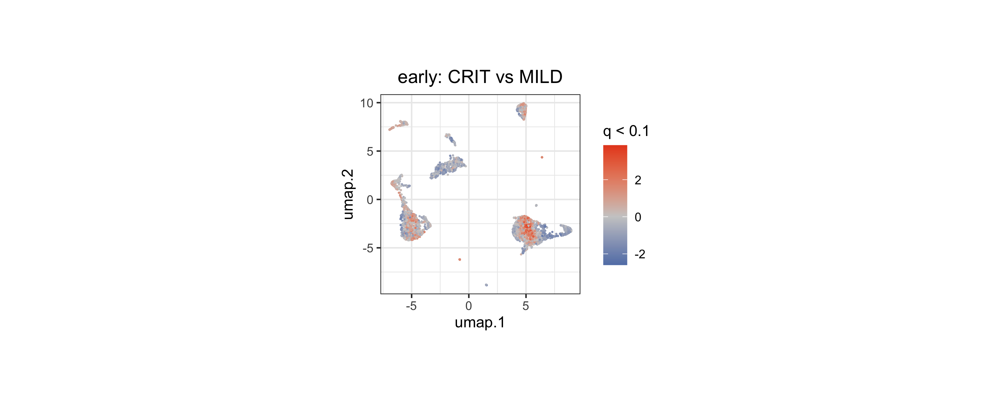
Sample Embeddings by Contrast
We compute a supervised sample embedding (partial-effect PC, pePC) for the early CRIT vs MILD contrast. pePC1 provides a single quantitative score that summarizes how each sample deviates along the contrast direction, with the fraction of total density variance it explains reported on the y-axis.
# Compute sample embeddings for each contrast
lm.cells <-
tinydenseR::get.embedding(
x = lm.cells,
.full.model = "contrast.Source_TSO.binary",
.contrast.of.interest = "CRIT_earlyVSMILD_early",
.verbose = TRUE
)
# Visualize pePC1 for the early CRIT vs MILD contrast
tinydenseR::plotSampleEmbedding(
x = lm.cells,
.embedding = "pePC",
.color.by = "Source",
.sup.embed.slot = "CRIT_earlyVSMILD_early",
.x.by = "Source_TSO.binary"
) +
ggplot2::theme(axis.text.x = ggplot2::element_text(vjust = 1,
hjust = 1,
angle = 30),
axis.title.x = ggplot2::element_blank())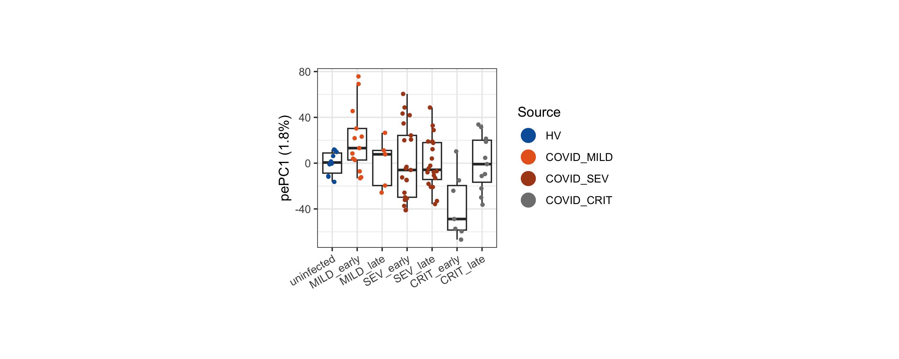
Step 4: Decomposing the Density Contrast with
get.plsD()
Differential density analysis tells us where changes occur across the
landmark landscape, but not what molecular features drive those changes.
get.plsD() bridges this gap by decomposing the density
contrast into PLS components whose loadings reveal the genes underlying
the signal.
We focus on the early CRIT vs MILD contrast, which captures the most clinically actionable comparison — the cellular features that distinguish patients who progress to critical illness from those with mild disease at an early time point.
lm.cells <-
tinydenseR::get.plsD(
x = lm.cells,
.coef.col = "CRIT_earlyVSMILD_early",
.model.name = "contrast.Source_TSO.binary",
.verbose = TRUE,
.min.prop = 0.001 # default is 0.005 but we lower it here to capture more subtle signals in this complex contrast
)plsD1: Inflammatory Myeloid Program vs. Interferon Response
plsD1 captures the dominant signal distinguishing early critical from mild COVID-19. Landmarks in the monocyte region carry the strongest plsD1 scores, indicating that this component is driven by monocyte-state variation.
tinydenseR::plotPlsD(
x = lm.cells,
.coef.col = "CRIT_earlyVSMILD_early",
.plsD.dim = 1
)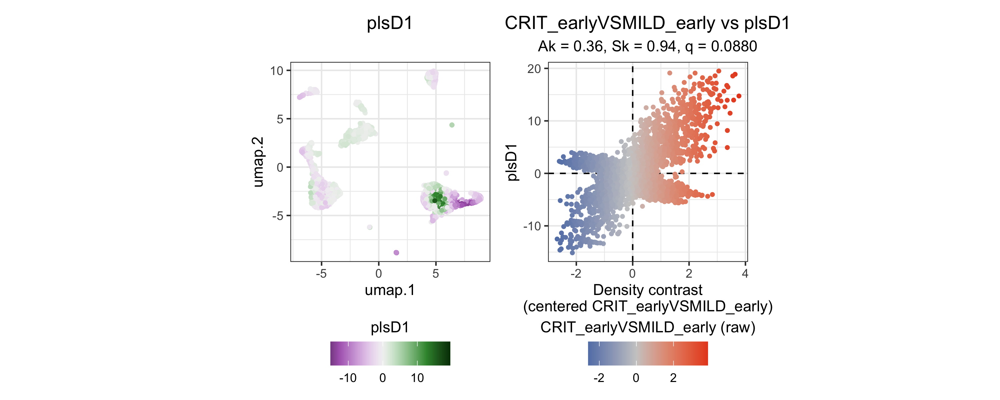
The left panel shows landmark scores: landmarks in the monocyte region carry the strongest positive plsD1 scores, indicating that this component is driven by monocyte-state variation. The right panel confirms tight coupling between plsD1 scores and the density contrast (Y).
The plsD1 gene loadings identify the molecular signatures underlying this signal. Positive loadings indicate features upregulated in the direction of the contrast (CRIT > MILD), while negative loadings indicate downregulation.
tinydenseR::plotPlsDHeatmap(
x = lm.cells,
.coef.col = "CRIT_earlyVSMILD_early",
.plsD.dim = 1,
.order.by = "plsD.dim",
.feature.font.size = I(x = 5)
)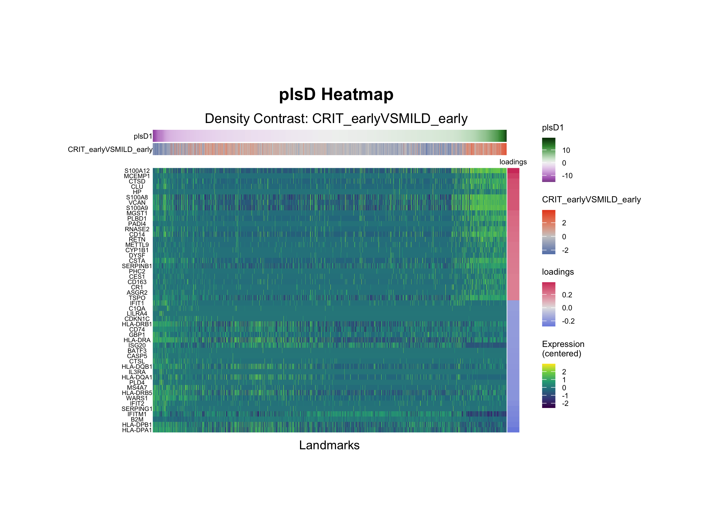
# enrichment analysis setup
msigdb.H <-
msigdbr::msigdbr(species = "Homo sapiens")
hypotheses.1 <-
c(
"REACTOME_NEUTROPHIL_DEGRANULATION",
"HALLMARK_INTERFERON_ALPHA_RESPONSE",
"HALLMARK_INTERFERON_GAMMA_RESPONSE"
) |>
(\(x)
unique(x = x[x %in% msigdb.H$gs_name])
)()
msigdb.list.1 <-
msigdb.H[msigdb.H$gs_name %in% hypotheses.1,
c("gene_symbol",
"gs_name")] |>
(\(x)
split(x = x$gene_symbol,
f = x$gs_name)
)() |>
lapply(FUN = unique)
set.seed(seed = 123)
fgseaRes.plsD1 <-
fgsea::fgseaMultilevel(pathways = msigdb.list.1,
stats = lm.cells$results$pls$CRIT_earlyVSMILD_early$loadings[,"plsD1"],
eps = 1e-50,
minSize = 5,
maxSize = 500,
nPermSimple = 1e5)
# add concordance score for leading edge genes (the higher the score, the higher the confidence in the results)
fgseaRes.plsD1$concordance <-
lapply(X = fgseaRes.plsD1$leadingEdge,
FUN = function(lead.edge){
mean(x = lm.cells$results$pls$CRIT_earlyVSMILD_early$concordance.weights[lead.edge,"plsD1"])
}) |>
unlist()
fgseaRes.plsD1[order(-log10(x = padj)*sign(NES)),]
(p <-
names(x = msigdb.list.1) |>
lapply(FUN = function(pw) {
fgsea::plotEnrichment(pathway = msigdb.list.1[[pw]],
stats = lm.cells$results$pls$CRIT_earlyVSMILD_early$loadings[,"plsD1"]) +
ggplot2::theme(plot.title = ggplot2::element_text(hjust = 0.5,
size = I(x = 12)),
plot.subtitle = ggplot2::element_text(hjust = 0.5,
size = I(x = 10)),
) +
ggplot2::labs(
title = gsub(pattern = "_",
replacement = " ",
x = pw,
fixed = TRUE) |>
gsub(pattern = "^HALLMARK |^REACTOME ",
replacement = "",
fixed = FALSE) |>
tolower(),
subtitle = paste0("p = ",
formatC(x = fgseaRes.plsD1[pathway == pw, padj],
digits = 0,
format = "e"))) +
ggh4x::force_panelsizes(rows = grid::unit(x = 1,
units = "in"),
col = grid::unit(x = 1.5,
units = "in"))
}) |>
c(nrow = 1) |>
do.call(what = gridExtra::grid.arrange))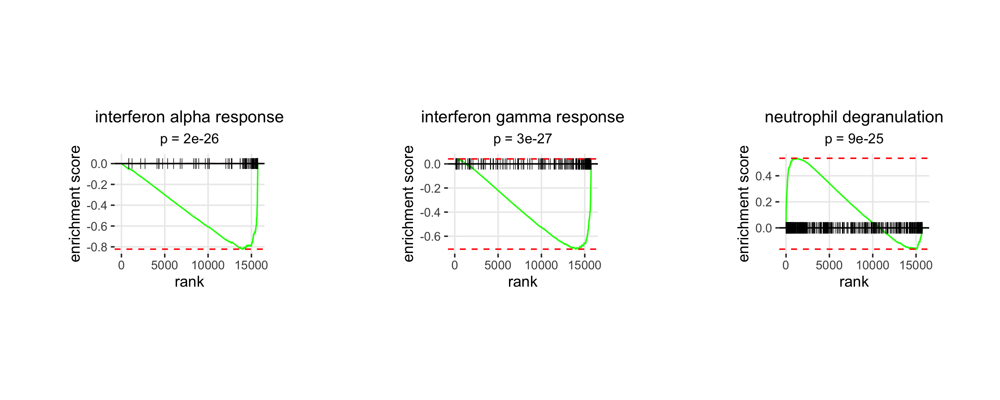
#### InterpretationPositive plsD1 loadings are enriched for neutrophil degranulation, with key contributing genes including S100A12, CLU, VCAN, and CTSD. Negative loadings are enriched for interferon gamma response and interferon alpha response programs, driven by genes such as IFIT3, IFIT1, IFITM1, HLA-DPA1, and HLA-DPB1. This axis is consistent with a shift from interferon-responsive classical monocytes in early mild disease toward a more inflammatory, dysregulated myeloid program in early critical disease, in line with previous reports of myeloid dysregulation in severe COVID-19.
plsD2: Progenitor-like vs. pDC/NK Programs
plsD2 captures a secondary axis of variation within the same contrast. plsD2 scores are most extreme within two very small subsets of landmarks, with positive scores mapping to progenitor-like regions and the most negative scores mapping to plasmacytoid dendritic cell (pDC) and NK cell regions.
tinydenseR::plotPlsD(
x = lm.cells,
.coef.col = "CRIT_earlyVSMILD_early",
.plsD.dim = 2
)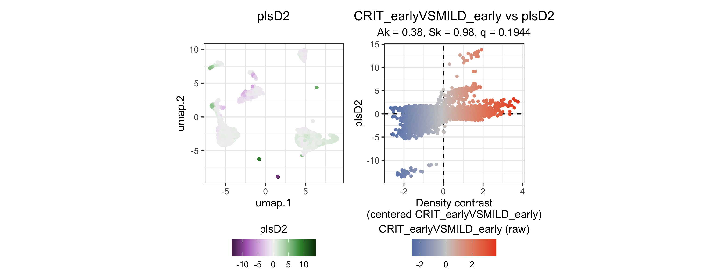
tinydenseR::plotPlsDHeatmap(
x = lm.cells,
.coef.col = "CRIT_earlyVSMILD_early",
.plsD.dim = 2,
.order.by = "plsD.dim",
.feature.font.size = I(x = 5)
)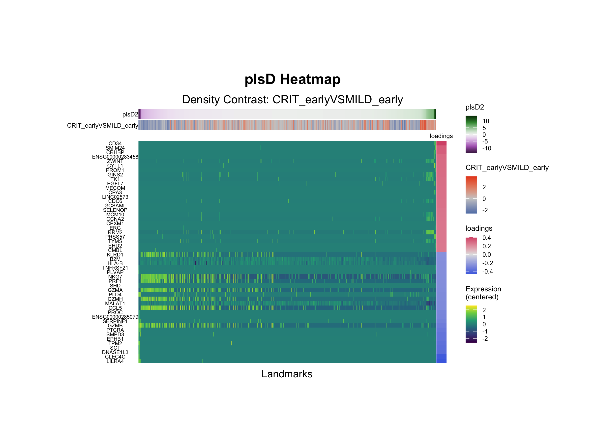
hypotheses.2 <-
c(
"HE_LIM_SUN_FETAL_LUNG_C2_HSC_ELP_CELL",
"KEGG_NATURAL_KILLER_CELL_MEDIATED_CYTOTOXICITY",
"HE_LIM_SUN_FETAL_LUNG_C2_PDC_CELL"
) |>
(\(x)
unique(x = x[x %in% msigdb.H$gs_name])
)()
msigdb.list.2 <-
msigdb.H[msigdb.H$gs_name %in% hypotheses.2,
c("gene_symbol",
"gs_name")] |>
(\(x)
split(x = x$gene_symbol,
f = x$gs_name)
)() |>
lapply(FUN = unique)
set.seed(seed = 123)
fgseaRes.plsD2 <-
fgsea::fgseaMultilevel(pathways = msigdb.list.2,
stats = lm.cells$results$pls$CRIT_earlyVSMILD_early$loadings[,"plsD2"],
eps = 1e-50,
minSize = 5,
maxSize = 500,
nPermSimple = 1e5)
# add concordance score for leading edge genes (the higher the score, the higher the confidence in the results)
fgseaRes.plsD2$concordance <-
lapply(X = fgseaRes.plsD2$leadingEdge,
FUN = function(lead.edge){
mean(x = lm.cells$results$pls$CRIT_earlyVSMILD_early$concordance.weights[lead.edge,"plsD2"])
}) |>
unlist()
fgseaRes.plsD2[order(-log10(x = padj)*sign(NES)),]
(p <-
names(x = msigdb.list.2) |>
lapply(FUN = function(pw) {
fgsea::plotEnrichment(pathway = msigdb.list.2[[pw]],
stats = lm.cells$results$pls$CRIT_earlyVSMILD_early$loadings[,"plsD2"]) +
ggplot2::theme(plot.title = ggplot2::element_text(hjust = 0.5,
size = I(x = 12)),
plot.subtitle = ggplot2::element_text(hjust = 0.5,
size = I(x = 10)),
) +
ggplot2::labs(
title = gsub(pattern = "_",
replacement = " ",
x = pw,
fixed = TRUE) |>
gsub(pattern = "^KEGG |^HE LIM SUN FETAL LUNG C2 ",
replacement = "",
fixed = FALSE) |>
tolower(),
subtitle = paste0("p = ",
formatC(x = fgseaRes.plsD2[pathway == pw, padj],
digits = 0,
format = "e"))) +
ggh4x::force_panelsizes(rows = grid::unit(x = 1,
units = "in"),
col = grid::unit(x = 1.5,
units = "in"))
}) |>
c(nrow = 1) |>
do.call(what = gridExtra::grid.arrange))
rank(x = lm.cells$results$pls$CRIT_earlyVSMILD_early$loadings[,"plsD2"])[c("NKG7", "PRF1", "CST7", "GZMB", "CCL5", "GZMH", "GZMA")]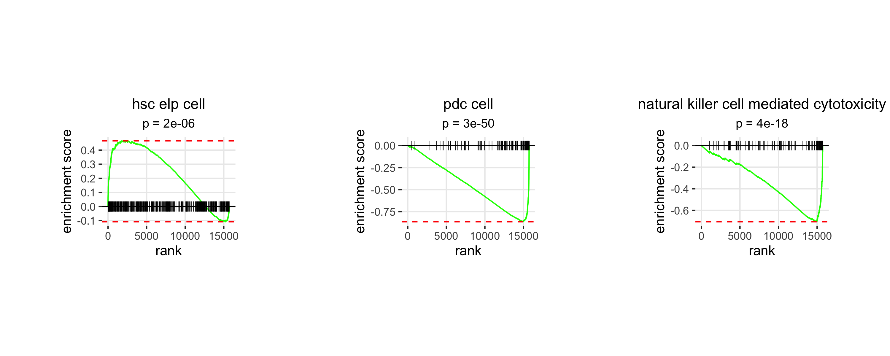
Interpretation
Analysis of plsD2 loadings reveals the progenitor-like cell-associated genes CD34, CYTL1 and PRSS57 to be highly expressed in landmarks with the highest plsD2 scores, while the pDC-associated genes CLEC4C, LILRA4 and TPM2 are highly expressed in landmarks with low plsD2 scores. Furthermore, the NK cell-associated genes NKG7, PRF1, CST7, GZMB, CCL5, GZMH and GZMA are among the 100 genes with the most negative loadings. These findings are consistent with reports that severe COVID-19 is accompanied by emergency myelopoiesis and impaired antiviral innate immunity, including expansion of proliferative progenitor/myeloid states and reduced or dysfunctional pDC and NK cell programs, suggesting that plsD2 captures a secondary severity-associated axis of hematopoietic stress beyond the dominant dysregulated monocyte program highlighted by plsD1.
Summary
This analysis demonstrates the full tinydenseR workflow
on a real clinical dataset:
| Step | Function | Purpose |
|---|---|---|
| 1 | RunTDR() |
Build landmarks, graph, and density profiles |
| 2 |
plotUMAP(), plotSampleEmbedding()
|
Validate biological structure |
| 3 |
get.lm() with contrasts |
Differential density testing, controlling for sex, age, and time since onset |
| 4 | get.plsD() |
Decompose density contrast into interpretable gene programs |
The key biological findings are:
- plsD1 identifies a monocyte-centered transcriptional axis separating neutrophil degranulation-related inflammatory features from interferon alpha/gamma response programs in early critical vs. mild COVID-19.
- plsD2 resolves a secondary severity-associated axis of hematopoietic stress, with progenitor-like cell-associated genes (CD34, CYTL1, PRSS57) at one extreme and pDC- (CLEC4C, LILRA4, TPM2) and NK cell-associated programs at the other, consistent with emergency myelopoiesis and impaired antiviral innate immunity in critical cases.
Together, these results illustrate how tinydenseR
combines sample-level modeling with exploratory decomposition to resolve
multiple layers of biological heterogeneity within a single clinically
relevant contrast.